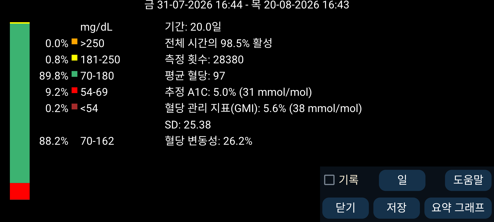
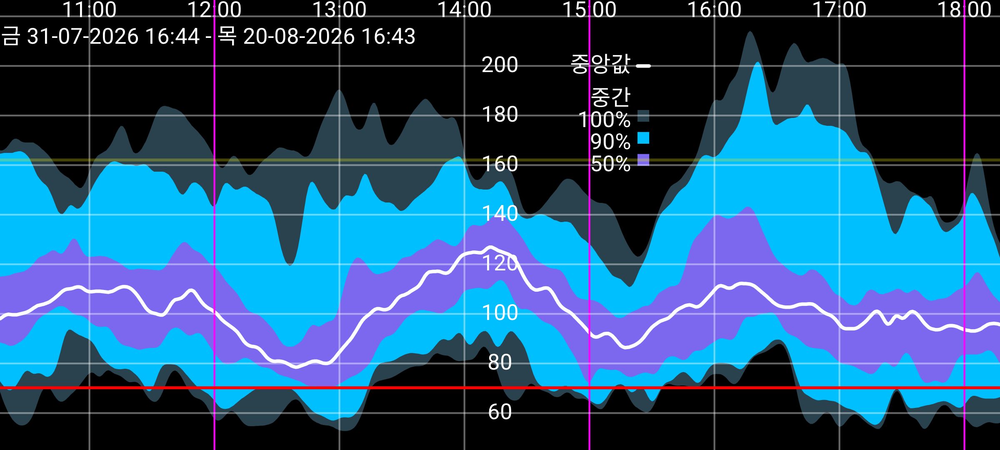

ar be de es fr hi it ja ko nl pl pt ru tr uk uz zh en
일부 통계는 AGP 를 약간 수정한 것입니다.
분석할 일수는 일수 버튼을 눌러 변경할 수 있습니다. 기간은 화면 끝 위치의 시각에서 끝나며 지정한 일수만큼 과거로 거슬러 올라갑니다. 모든 데이터는 센서에서 Bluetooth로 매분 수신한 혈당 값(Juggluco에서 스트림 이라고 함)만을 기반으로 합니다.
화면 왼쪽에는 특정 혈당 범위에 속하는 측정값의 백분율이 표시됩니다. 표준 범위는 항상 표시됩니다. 다음에서 비표준 목표 범위를 지정하면 왼쪽 메뉴→설정→표시그 목표 범위의 범위 내 시간이 표준 범위 아래에 표시됩니다.
Juggluco가 센서에서 혈당 값을 수신한 시간의 백분율입니다.
평균 혈당에서 이전 공식(Nathan 등, 2008)을 사용하여 HbA1c를 추정합니다. 계산기는 다음을 참조하십시오: https://professional.diabetes.org/diapro/glucose_calc .
여기에 표시하는 이유는 Abbott Libre 2 앱에 표시되는 값을 찾는 사람이 있기 때문입니다. GMI는 2018년에 이 지표를 대체하기 위해 제안되었습니다.
평균 혈당에서 널리 쓰이는 특정 공식을 이용해 계산합니다(참조: https://www.jaeb.org/gmi/). HbA1c(A1c라고도 함)를 경험적으로 예측한 값이며 백분율과 mmol/mol로 표시됩니다. 제 개인적으로는 추정 A1C가 GMI보다 더 좋은 예측값이지만 Abbott Libre 3 앱에서는 GMI를 사용합니다.
변동계수 %CV=(SD/평균)*100%를 혈당 변동성의 척도로 사용합니다. 변동계수가 클수록 혈당 값이 평균에서 더 멀리 분포합니다.
지정한 일수의 혈당 값 보고서를 표시합니다. 통계, 개요 그래프, 각 날짜별 이미지가 포함됩니다. PDF로 인쇄하여 의료진에게 이메일로 보낼 수 있습니다. 왼쪽 메뉴→설정→데이터 교환→웹 서버를 활성화해야 합니다. 다음 URL을 웹 브라우저에서 엽니다: http://127.0.0.1:17580/x/report .
(스트림 혈당 값이 최소 9일치 있을 때만 표시됩니다.)
이 기간의 모든 스트림 혈당 값을 이용해 하루의 매분마다 혈당 값이 어떻게 분포했는지 나타내는 합성 그래프를 그립니다. 검정색 또는 흰색 중앙값 선은 하루 각 시각에서 혈당 값의 50%가 그 아래에 있는 혈당 값을 나타냅니다. 가장 밝은 파란색은 모든 값이 들어 있는 영역입니다. 그보다 진한 파란색은 중앙값 주변에 값의 90%가 들어 있는 영역이고, 가장 진한 파란색은 중앙값 주변 50%가 들어 있는 영역입니다. 영역의 경계를 선으로 보면 다음과 같이 해석할 수도 있습니다. 가장 낮은 선 아래에는 0%, 두 번째 선(가장 밝은 파란색과 중간 파란색 사이) 아래에는 5%, 세 번째 선(가장 진한 파란색과 중간 파란색 사이) 아래에는 25%, 검정 선 아래에는 50%가 있습니다. 그 위로 75%, 95%, 100%가 이어집니다.
보기 좋게 하기 위해 곡선은 이항 필터로 평활화합니다.
화면 아무 곳이나 누르면 요약 그래프를 닫습니다. 단, 왼쪽이나 오른쪽 가장자리를 누르면 하루 중 그래프 위치를 뒤나 앞으로 이동합니다. 스크롤하여 곡선을 앞뒤로 이동할 수도 있습니다. 두 손가락을 벌리거나 오므려 시간 축을 변경할 수 있습니다.